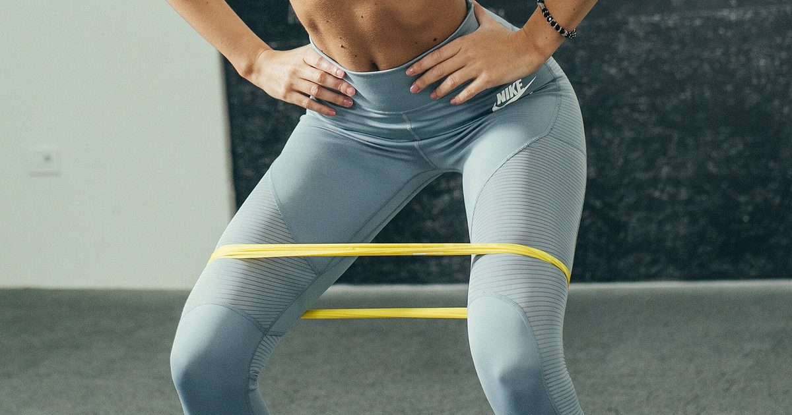

Minimal Gear
Loop Bands vs Tube Bands: Which Should You Buy?
They look interchangeable and are not. One is better for pressing and rowing; the other is better for assistance, mobility and almost everything else.

Resistance bands come in two main formats, and the marketing rarely distinguishes them clearly. They suit different exercises, and buying the wrong one first is a common and avoidable annoyance.
The formats
Tube bands are a length of rubber tubing with handles at each end, usually sold as a set of several strengths with clip-on attachments, a door anchor and ankle straps.
Loop bands are continuous flat loops of latex, sold in a range of widths. The long variety — roughly a metre in circumference — is the useful one for strength training. Short mini-bands are a different product used mostly for hip work.
Both provide resistance that increases as they stretch. Everything below follows from the handles.
What tube bands do better
Pressing and rowing comfort. Handles make chest presses, rows and overhead presses considerably more comfortable, because you are gripping a moulded handle rather than a stretched band edge. Over fifteen repetitions this matters more than it sounds.
Precise resistance. Sets typically clip several tubes to the same handles, so you can combine them for a specific total. That gives you meaningful increments — useful for progressive overload, which is otherwise hard to arrange with bands.
Ankle straps. Enable leg curls, kickbacks and hip abduction work that loop bands do awkwardly.
So tube bands suit anyone whose main use is a structured strength session — the kind described in the resistance band full-body workout.
What loop bands do better
Assisted pull-ups. The single biggest advantage. A loop band hangs over a pull-up bar with one foot in it, taking a portion of your weight. Tube bands cannot do this, and it is the standard route to a first pull-up — see how to do your first pull-up at home.
Durability. Fewer failure points. Tube bands most often fail where the tubing meets the handle attachment; a continuous loop has no such junction.
Versatility of anchoring. A loop can go around a post, a foot, a knee, a bar, or another loop. Handles constrain you to gripping.
Higher maximum resistance. Heavy loop bands provide considerably more resistance than most tube sets, which matters once you are strong.
Mobility and stretching work. A loop around a foot is a better tool for hamstring and hip work than a handled tube.
Side by side
| Use | Tube bands | Loop bands |
|---|---|---|
| Chest press | Better | Workable |
| Rows | Better | Workable |
| Overhead press | Better | Workable |
| Assisted pull-ups | Not possible | Much better |
| Squats and deadlifts | Workable | Better |
| Face pulls / pull-aparts | Good | Good |
| Leg curls, kickbacks | Better (ankle straps) | Awkward |
| Mobility work | Awkward | Better |
| Maximum resistance | Moderate | High |
| Durability | Handle junctions fail | Better |
| Travel | Bulkier | Packs smaller |
Which to buy first
If you can only buy one: a set of long loop bands. Two reasons. They enable assisted pull-ups, which is the single most valuable thing a band does for a home trainee. And they are more durable, more versatile in anchoring, and pack smaller.
The comfort disadvantage is real but manageable. Wrapping the band around your hands, or gripping it doubled, solves most of it.
Buy tube bands first if your primary goal is a structured pressing and rowing session and you already have a solution for pulling — a pull-up bar, or a table for inverted rows. In that case the handles and the incremental resistance are worth more than the loop's versatility.
Owning both costs little and is what most people end up doing. If you are going to reach that point anyway, start with loops.
Loop bands can assist a pull-up. Tube bands cannot. For a home trainee, that one difference usually settles it.
Choosing strengths
Band strength is usually given as a resistance range in pounds or kilograms, which is approximate because the actual resistance depends entirely on how far you stretch it.
For loop bands, buy at least three widths. A light band for pull-aparts and face pulls, a medium for rows and presses, and a heavy for assisted pull-ups and squats. Buying a single medium band is the common mistake, since it is simultaneously too heavy for rear-deltoid work and too light for assistance.
For tube bands, buy a set with clip-on tubes rather than fixed-resistance individual bands, so you can combine them.
Whichever you choose, band resistance is light in strength-training terms, and evidence comparing light and heavy loads found comparable hypertrophy when sets were taken close to failure.1 The condition matters: a light band taken to a comfortable stopping point trains very little.
Durability and safety
Bands are consumable rather than permanent. Latex degrades with ultraviolet light, heat, and repeated stretching, so a band stored in a sunny window will fail sooner than one in a drawer.
Inspect for nicks, cracks, thin patches and any whitening before each session, and replace at the first sign of wear rather than the first failure. Never stretch a band beyond about two and a half times its resting length. Never anchor to something that can move. And never position your face in the line of a band under tension — the recoil from a failure causes eye injuries, and it is the most commonly reported band injury.
Tube bands need one additional check: the junction where the tubing enters the handle, which is where they usually fail. Pull firmly on each handle before a session.
Where to go next
For a complete band session, see the resistance band full-body workout. For where bands sit in a wider equipment plan, see the minimalist home gym guide and the best cheap home gym equipment.
Frequently asked questions
Should I buy loop bands or tube bands?
Loop bands, if you are only buying one set. They enable assisted pull-ups, which tube bands cannot do, and they are more durable and more versatile in how they anchor. Buy tube bands first only if you already have a solution for pulling.
What are loop bands best for?
Assisted pull-ups, squats and deadlifts, mobility work, and anything needing high resistance. They anchor around posts, feet, knees and bars, which handles cannot.
What are tube bands with handles best for?
Chest presses, rows and overhead presses, where the handles are considerably more comfortable over fifteen repetitions. Sets with clip-on tubes also give you precise resistance increments, and ankle straps enable leg curls and kickbacks.
What resistance bands should a beginner buy?
At least three strengths: a light band for face pulls and pull-aparts, a medium for rows and presses, and a heavy for assisted pull-ups and squats. Buying a single medium band is the common mistake.
How long do resistance bands last?
They are consumable. Latex degrades with UV, heat and repeated stretching, so a band kept in a sunny window fails sooner than one in a drawer. Inspect for nicks, cracks and whitening before each session and replace at the first sign of wear.
Are resistance bands dangerous?
They store considerable energy and fail suddenly. The most commonly reported injury is to the eye from recoil, so never position your face in the line of a band under tension, never anchor to something that can move, and never stretch beyond about two and a half times resting length.
Sources and further reading
- Schoenfeld BJ, Grgic J, Ogborn D, Krieger JW. “Strength and Hypertrophy Adaptations Between Low- vs. High-Load Resistance Training: A Systematic Review and Meta-analysis.” Journal of Strength and Conditioning Research, 2017;31(12):3508–3523. PubMed.
- Schoenfeld BJ, Ogborn D, Krieger JW. “Dose-response relationship between weekly resistance training volume and increases in muscle mass: A systematic review and meta-analysis.” Journal of Sports Sciences, 2017;35(11):1073–1082. PubMed.
- NHS. Strength and Flex exercise plan.
- World Health Organization. WHO Guidelines on Physical Activity and Sedentary Behaviour. 2020.
Comments
Comments are not enabled yet. Add a hosted comment embed (Disqus, Commento, Giscus) inside this container when you are ready.